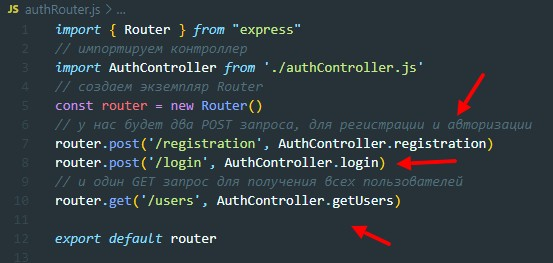
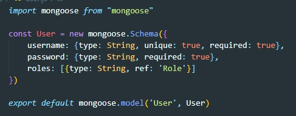
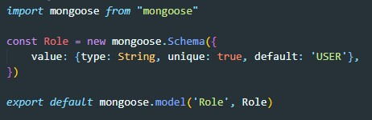

Ссылка до репозитория
Как создавать атлас для mongoDb можно посмотреть в TEORY - MONGODB - Atlas
В двух словах: создаем кластер, указываем пользователя для авторизации с правами читать и писать в бд (лог - admin, пар - admin). Далее указываем с какого ip можно запрашивать данные из БД, выбираем any ip 0.0.0.0/0
В консоле вводим:
npm init -yПосле чего в проекте появится файл package.json
Далее устанавливаем пакеты
npm i express mongoose nodemonВ корне проекта создаем файл index.js - это будет точкой входа в наше приложение. Так же в package.json не забываем прописать скрипт nodemon index.js
Для этого открываем создавшийся атлас и выбираем раздел Connect
В открывшемся окне выбираем Connect your Application и копируем адрес до кластера
Импортируем в index.js библиотеку mongoose
Теперь у mongoose необходимо вызвать метод connect. Это ассинхронный метод поэтому делаем нашу функцию старта сервера ассинхронной
Так же наш сервер должен уметь парсить JSON, для этого обращаемся к app и вызываем метод use
Создаем файл authRouter.js в котором пропишем маршруты
Возвращаемся в index.js и импортируем только что созданный router
Указываем нашему серверу что бы он этот роутер прослушивал
В корне проекта создаем файл authController.js в котором будем описывать всю логику взаимодействия с маршрутами
По факту - это обыкновенный класс у которого будут методы регистрации, авторизации и получения всех пользователей.
Теперь возвращаемся к нашему router и сюда импортируем только что созданный объект
Теперь на каждом маршруте указываем какой метод должен быть выйзван
Для проверки в методе getUsers добавим строчку res.json('server works')
На этом этапе если в Postman сделать get запрос до адреса http://localhost:5000/auth/users то в ответе мы получим
В корне проекта создаем папку models, внутри этой папки создаем два файла user.js и role.js. Первый будет описывать схему данных пользователя, второй просто будет содержать возможные роли пользователя. У нас для примера будет две роли - USER и ADMIN.
Импортируем Schema и model из пакета mongoose. Далее описываем схему данных пользователя:
Вот так будет выглядеть схема ролей
